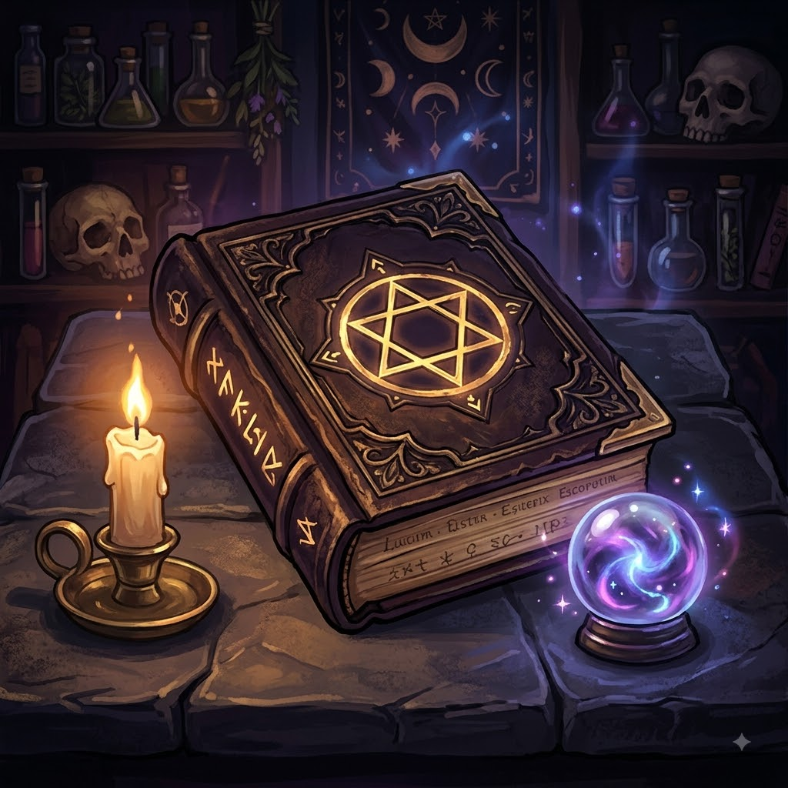

meu primeiro post
por: Spencer Luís
boas-vinda ao bad lucky charm! aqui irei apresentar o ocultismo desse mundo. Eu estudo na academia de magia Bad Lucky Charm, sou o mais popular, obviamente! Vou compartilhar tudo que eu puder com voces!!